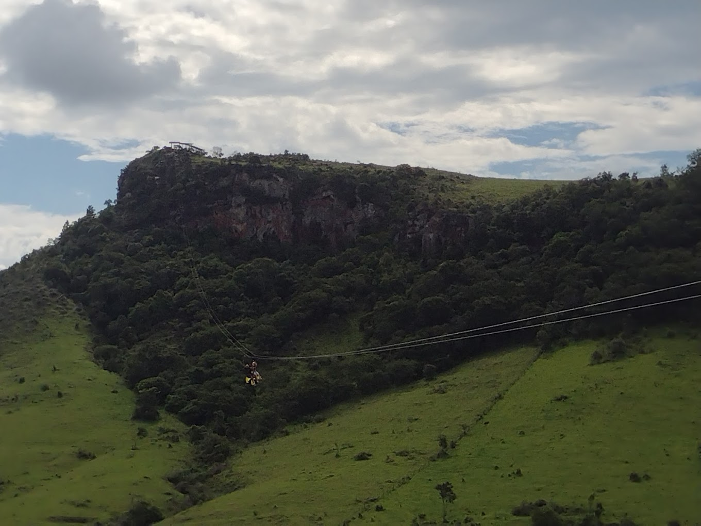
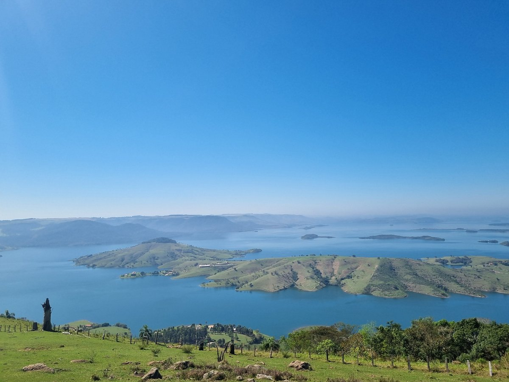
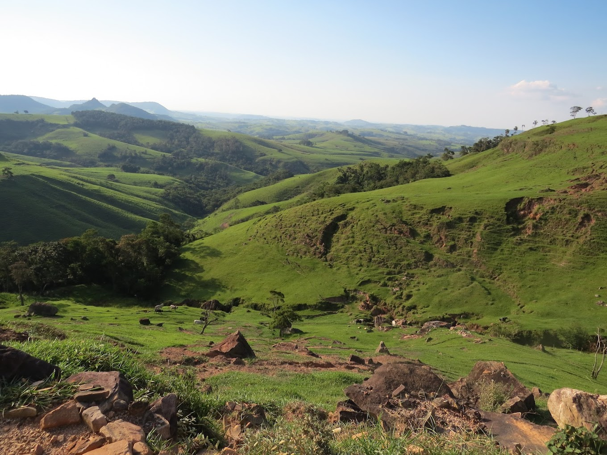

Galeria de Imagens




A Pedra do Índio é um famoso ponto turístico de Ourinhos, conhecido por suas formações rochosas impressionantes e vistas deslumbrantes.
Endereço: Estrada da Pedra do Índio, Ourinhos - SP